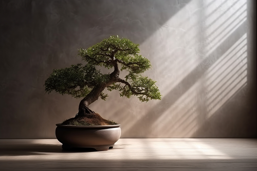
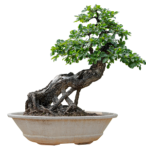
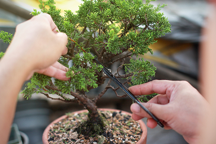
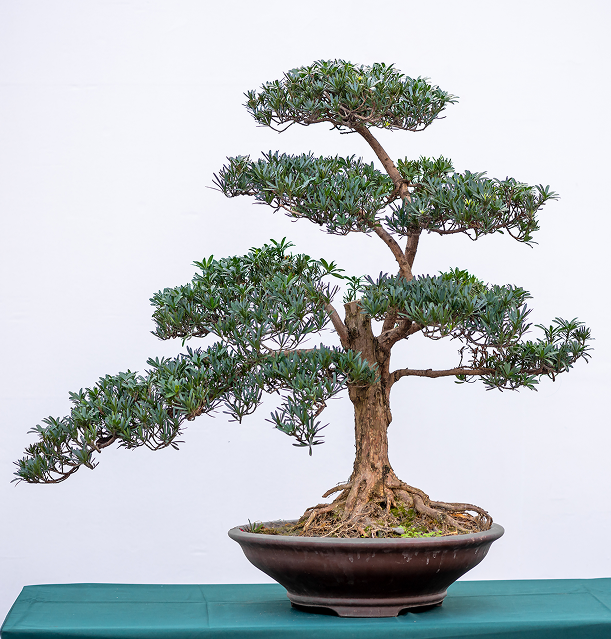
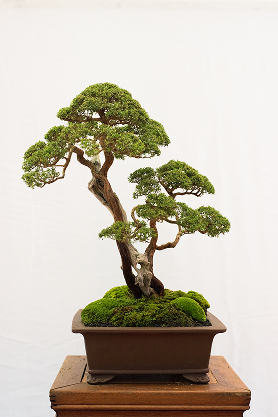
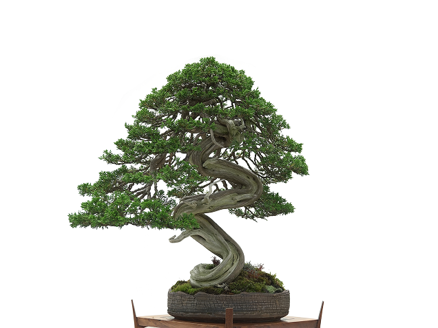

数世代にわたる記憶が蓄積された、 終わりなき「生きる芸術」、それが盆栽。
季節ごとに姿を変える無常な表情の裏側には、 悠久の時を刻み続ける永遠の骨格が隠されている。
それは、幹の亀裂から、葉先の一振りにまで。
散りゆく葉に無常を、揺るぎない幹に永遠を。
幾多の時間を重ね、盆栽は呼吸している。
かつての誰かが守り抜いたその生命が、
今、DNAの螺旋となって現代のあなたの日常と共鳴し始める。
scroll
数世代にわたる記憶が蓄積された、 終わりなき「生きる芸術」、それが盆栽。
季節ごとに姿を変える無常な表情の裏側には、 悠久の時を刻み続ける永遠の骨格が隠されている。
それは、幹の亀裂から、葉先の一振りにまで。
散りゆく葉に無常を、揺るぎない幹に永遠を。
幾多の時間を重ね、盆栽は呼吸している。
かつての誰かが守り抜いたその生命が、
今、DNAの螺旋となって現代のあなたの日常と共鳴し始める。






盆栽は、引き算の美学の究極とされている。何もない空間に深い世界を想像させる、日本の伝統的な余白の概念に基づいている。過剰に手を加えるのではなく必要最小限の行為で自然の美しさを引き出すことが重視される。そこに侘び寂びを見出すのだ。
盆栽は人間の手を加えながらも、決して自然を無理に支配・コントロールしようとするものではない。樹木本来の個性や自然の意志を読み取り、その可能性を引き出す。自然に対する敬意が、盆栽には宿っている。
盆栽には決して完成はなく、常に変化し続ける。万物は移ろい、やがて朽ちるという無常の美意識を根底に持ち、鉢の中に老いや死、時間の流れそのものを映し出す。自然のリズムに合わせてゆっくりと。完成しきらず変わり続ける余白があること。未完のままの姿を肯定すること。その変化の連なりに永遠を見出すのが盆栽の深い精神性だ。
このサイトは、日本が世界に誇る盆栽文化をより多くの日本の方に親しんでもらうためのコンテンツである。
生きる芸術と呼ばれる盆栽の世界は奥深く、そこには人の想いが宿っている。
人から人へと受け継がれ、その想いが折り重なり繋がっていく。
それはまさに、生命に受け継がれるＤＮＡの螺旋のように―
盆栽に流れるＤＮＡの世界を感じてほしい。